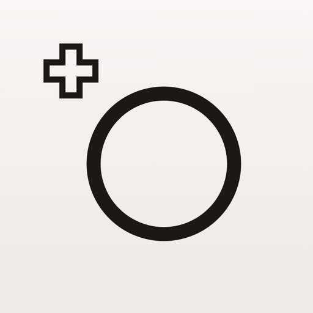
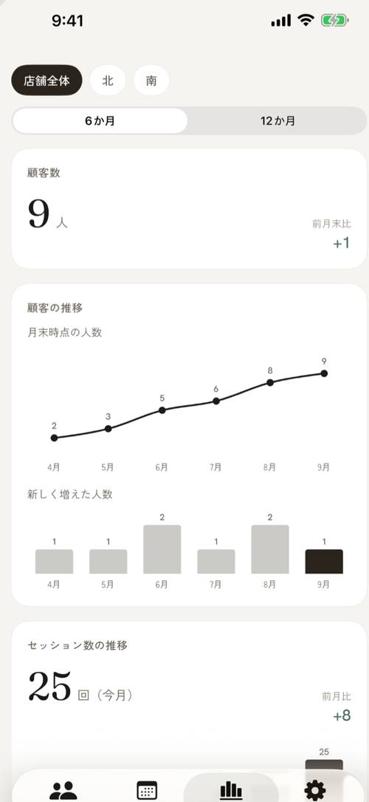
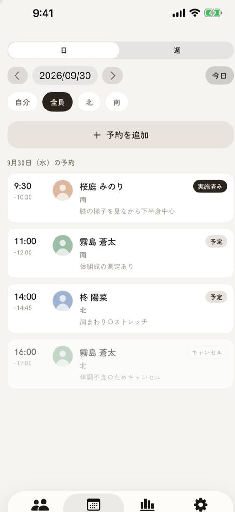

KATACHI +パーソナルトレーナーの顧客カルテを、店舗のみんなで。
パーソナルトレーナーと小規模ジム・スタジオのための、顧客カルテとトレーニング記録のアプリ。記録は自分の iCloud にだけ保存し、スタッフを招待して店舗で共有できます。iPhone・iPad・Mac で使えます。
- 使う場面
- トレーナーの顧客管理
- 使える端末
- iPhone・iPad・Mac
- 記録の置き場所
- 端末と自分の iCloud




顧客の記録は、あなたの iCloud にだけ
顧客の記録は、あなたの端末と iCloud にだけ保存します。開発元の Pohoda はサーバーを持たず、記録を受け取ることも見ることもできません。Face ID やパスコードでアプリにロックをかけられます。
スタッフと店舗で共有
オーナーがスタッフの Apple アカウントを招待すると、同じ店舗の顧客カルテ・予約台帳を全員で見て、記録できます。退職したスタッフを外すと、その人の端末から店舗の記録が消えます。複数の店舗も切り替えられます。
業種に合わせた記録
店舗を作るときに業種を選ぶと、種目と記録の項目が切り替わります。筋トレ・ピラティス・ヨガ・ストレッチに対応しています。
カウンセリングから記録まで
顧客台帳（顔写真・連絡先・生年月日・目的・担当・配慮事項）、カウンセリングシート（人体図をタップして気になる部位を記録）、指導方針と引き継ぎメモ、iPad でその場で署名する同意書（PDF で保存）。
対面のセッションを速く記録
前回の記録を表示し、セットは数タップで追加。メニューの型から始められ、入力のたびに自動保存します。
予約台帳と分析
受けた予約を日・週で担当者ごとに確認し、そのままセッションの記録へ進めます。顧客数・セッション数・予約数と実施率を、店舗全体と担当者ごとに月ごとに見られます。
変化を見える形に
体重・体脂肪・周径の推移、同じ向きで並べる姿勢写真、種目ごとのグラフ（推定値は目安です）。その日の記録と推移は PDF のレポートにして顧客に共有できます。
書き出しとバックアップ
顧客とセッションの CSV 書き出し・取り込み（オーナーのみ）、書き出しの履歴、端末内の自動バックアップ（7世代）とファイルへの書き出しに対応しています。
1人なら無料。共有するときに、サブスクリプション。
1人で使う分は無料です。自分の店舗1つで、顧客5人まで記録できます。顧客を6人以上記録する、スタッフを招待して店舗で共有するときは、使う人それぞれのサブスクリプションです。店舗に参加するスタッフも、それぞれ契約が必要です。
1人・顧客5人まで
お支払いは購入の確定時に Apple ID に請求されます。サブスクリプションは、期間終了の24時間以上前に解約しない限り自動で更新されます。解約は App Store のアカウント設定から行えます。契約が終了しても、記録の閲覧と書き出しは続けて使えます。
記録は、あなたの iCloud にだけ。
顧客の記録は、あなたの端末と iCloud にだけ保存されます。開発元の Pohoda はサーバーを持たず、記録を受け取ることも見ることもできません。詳しくは プライバシーポリシー ・ 利用規約 をご覧ください。
日本国内の事業者向けのアプリです。共有には、オーナーとスタッフそれぞれの Apple アカウントと iCloud が必要で、店舗のデータはオーナーの iCloud 容量を使います。医療・診断を目的としたアプリではありません。
KATACHI + はどんなアプリですか？
パーソナルトレーナーと小規模ジム・スタジオのための、顧客カルテとトレーニング記録のアプリです。iPhone・iPad・Mac で使えます。顧客台帳、カウンセリングシート、セッションの記録、予約台帳、分析、同意書への署名までをひとつにまとめ、同じ店舗のスタッフ全員で見て記録できます。
顧客の記録はどこに保存されますか？
あなたの端末と iCloud にだけ保存されます。開発元の Pohoda はサーバーを持たず、記録を受け取ることも見ることもできません。Face ID やパスコードでアプリにロックをかけられます。
スタッフと共有するには？
オーナーがスタッフの Apple アカウントを招待すると、同じ店舗の顧客カルテ・予約台帳を全員で見て、記録できます。退職したスタッフを外すと、その人の端末から店舗の記録が消えます。複数の店舗を切り替えて使えます。共有には、オーナーとスタッフそれぞれの Apple アカウントと iCloud が必要です。
どんな業種に対応していますか？
店舗を作るときに業種を選ぶと、種目と記録の項目がその業種に合わせて変わります。筋トレ（重量×回数、推定最大重量とボリュームのグラフ）、ピラティス（マシンとスプリング、回数、左右）、ヨガ（ポーズごとの呼吸数、左右、バリエーション）、ストレッチ（保持時間、方法、強さ、柔軟性の前後比較）に対応しています。
料金はいくらですか？
1人で使う分は無料で、自分の店舗1つで顧客5人まで記録できます。顧客を6人以上記録する、スタッフを招待して店舗で共有するときは、使う人それぞれのサブスクリプションです（月額1,000円、年額10,000円）。店舗に参加するスタッフも、それぞれ契約が必要です。サブスクリプションは、期間終了の24時間以上前に解約しない限り自動で更新されます。解約は App Store のアカウント設定から行えます。契約が終了しても、記録の閲覧と書き出しは続けて使えます。
顧客が自分で予約できますか？
いいえ。予約台帳は、LINE や電話、外部の予約サービスで受けた予約を店舗側が記録するものです。顧客が自分で予約する機能や、顧客への通知はありません。お店の予約ページのリンクを登録して、顧客に送ることはできます。
対応機種と、利用の条件は？
iOS 18 以上の iPhone・iPad と Mac で使えます。日本国内の事業者向けのアプリで、App Store の配信は日本のみです。店舗のデータはオーナーの iCloud 容量を使います。医療・診断を目的としたアプリではありません。